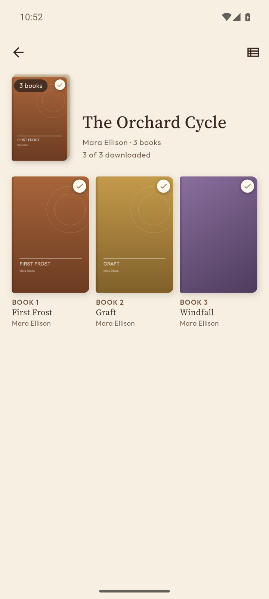
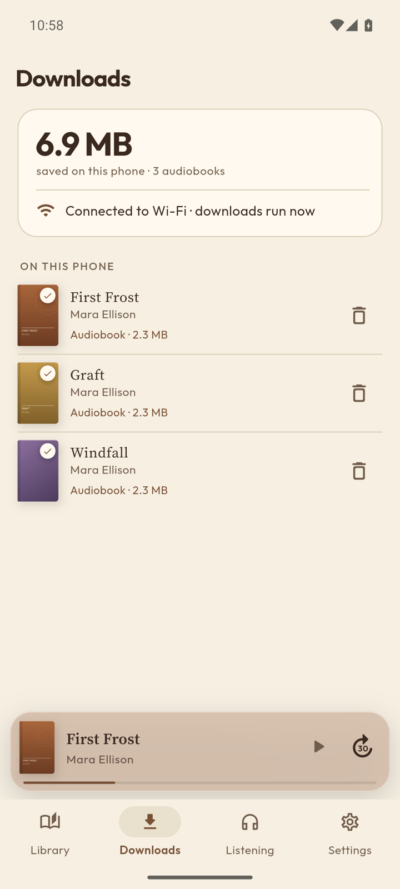
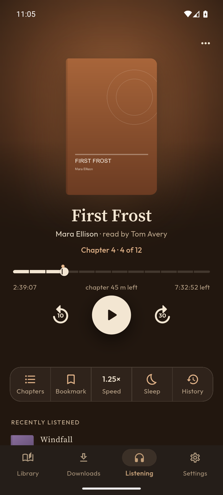
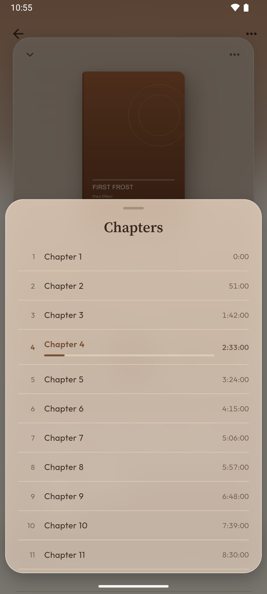
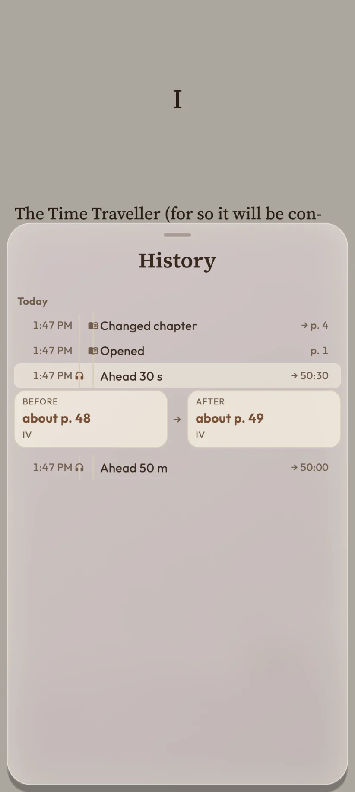
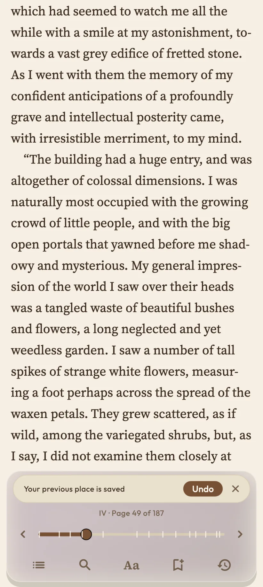
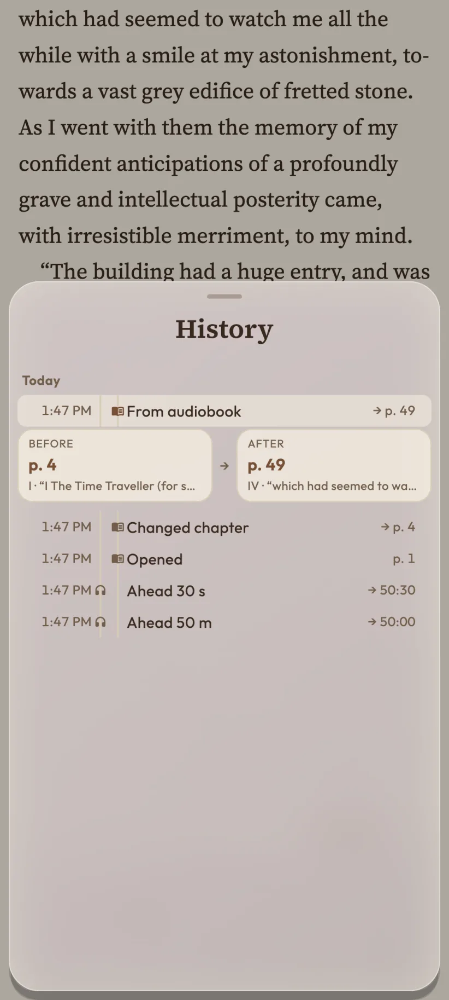
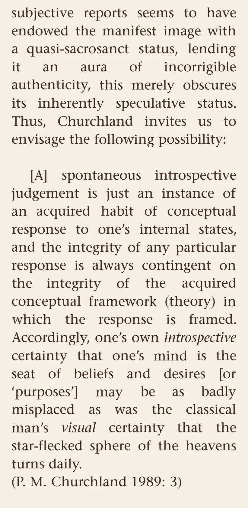

Your books, on paper you can carry.
An Android app for the audiobooks and ebooks on your Jellyfin server, the free media server that you run yourself, with all the features you might miss from Audible, Kindle, and KOReader.
Written in Flutter · open source · Android today

Why I made Bookfin
Jellyfin is an amazing home for TV shows, movies, and music. Since forking from Emby, it's also technically supported ebooks and audiobooks, but support has always been thin — an after thought, not a use-case it was really designed for.
In September of 2026, a huge push was made to improve support for audiobooks and ebooks, bringing server-side book metadata, EPUB cover generation, page counts, audiobook chapter extraction, ISBN IDs, progress tracking, and a redesigned ebook reader, but even as of early November, support on the mobile app is thin: you can't list chapters, only skip to the next and previous ones; there's no listening or reading history or bookmarks; series aren't automatically grouped into collections and corresponding ebooks and audiobooks aren't collapsed; it's easy to lose, accidentally repeat, or cancel downloads; and excellent features from KOReader like PDF reflow that uses cut out word images haven't even begun to appear on the horizon.
This is where Bookfin comes in. Bookfin brings all of the features you might miss from Audible or Audiobookshelf for audiobooks, and Kindle or KOReader for ebooks, into one fully-integrated, easy to use, and performant app.
If you want a minimalist reading experience, Bookfin is not the app for you. It comes with Tesseract layout recognition and OCR, a small STT model for mapping locations back and forth between corresponding audiobooks and ebooks (like Kindle WhisperSync), and a full implementation of an EPUB reader completely in Flutter to preserve performance and cross-platform behavior. If you want to minimize bundle size and want "just the books, ma'am," go with the default Jellyfin audiobook app. If you want the complete experience, you've come to the right place.
Part one. Everything you expect
First, the everyday parts: finding a book, getting it onto your phone, and listening to it. Each one is quick, tidy, and works offline.
One. The shelf
Only your books, and each book only once.
Bookfin shows only your Jellyfin book libraries, with no movies or music in the way. An audiobook and its ebook share one cover, and a series stacks into one card that opens in reading order.
The shelf opens straight from what is saved on your phone, then refreshes from your server in the background. If the server cannot be reached, your downloaded books are still there.
- Filter by audiobooks, ebooks, or what is downloaded.
- Show covers in a grid, or titles in a list.
- Search the whole library.


Two. The book page
One page for the book, however you take it in.
A book’s page puts its audiobook and its ebook together: the length of the recording, the ebook’s format, how far you are, and the book’s place in its series. Resume listening or open the reader from the same place.
Download the audiobook, the ebook, or both. Lost signal, or a phone that dies mid-download? Bookfin picks up where it left off, fetches only what is missing, and never hands you a broken file. When you remove a book, its files really go.
- Downloads wait for Wi-Fi unless you allow mobile data.
- Downloads shows what is on the phone, and how much space it takes.


Three. The player
Made for long books and late nights.
A twenty-hour book needs more than a play button. Chapters, Bookmark, Speed, Sleep, and History sit in one row under the controls. The chapter list shows every chapter with its start time. Tap one to go there.
The position bar marks every chapter and every bookmark, so you see the shape of the whole book and where you are in it. After sunset, the player turns warm and dim, with a glow in the colors of the cover.
- Change the speed, and set a sleep timer.
- See the time left in the chapter and in the whole book.
- Skip back or ahead. History keeps every skip, so you can always go back.


Part two. What no other Jellyfin app does
Then the parts that made Bookfin worth building: one history for both editions of a book, PDFs that you can read on a phone, and an ebook engine of its own.
Four. Shared history
Listen and read the same book, and never lose your place in either.
Bookfin records every move that you make in a book with where it began and where it ended: a skip, a chapter change, a search result, a bookmark. History shows the audiobook and the ebook as two tracks, each with its own icon. Tap either end of a move to go there.
The two editions also work together, as on a Kindle. Listened to a chapter on the bus? In the reader, open History and choose Go to on that listening entry. A small speech-to-text model on your phone hears what the narrator said there, and Bookfin opens the ebook at those words. A reading entry does the same in the player.
- A jump moves only the edition that you have open, and Undo takes it back. Your place in the other edition stays where it was.
- A place from the other edition says “about”, because a narrator’s pace is never perfectly even.
- Name bookmarks in either edition. Swipe an entry away to delete it. Nothing else removes your history.

Go to, step by step



The Time Machine, from Standard Ebooks, with demonstration history. Capture notes.
Five. PDF reflow
Any PDF, even a scan, at your size and in your colors.
On a phone, a PDF page shrinks until its text is too small to read. The usual fix pulls the text out and sets it again as plain text. That throws the layout away, and on a scan it puts every recognition mistake in front of you.
Bookfin keeps the printed words themselves. It cuts each word out of the page as a small picture. Then it scales the pictures to your text size, tints them for Cream or Night, and lays them out again in lines that fit your screen. Bookfin calls this view Page words.
Tesseract, running on your phone, finds the edges of the words and also reads the layout of the page: its paragraphs, headings, pictures, and rules. So the new layout keeps what matters. Figures stay whole, quotations stay indented, and headings stay headings.
- Select, copy, and search the words. Under the pictures, Tesseract’s text does the work, offline. Scans are recognized in English.
- A recognition mistake never changes what you read, because you read the printed words.
- Pages turn by screens of complete lines, with no sideways scrolling.
- Switch to Original, the printed page with its margins and running headers trimmed, or to Text, the words as plain ebook text. Each book keeps its view.
- Find each word From the PDF’s own text, or on the phone for a scan.
- Cut it out Every word becomes a small picture of itself.
- Lay it out again Larger, recolored, and wrapped to your screen.
One printed page, three ways



Nihil Unbound, printed page 9. Each Page words capture shows the first screen of that page. The rest of the page follows on the next screen. Capture and excerpt notes.
Six. The EPUB reader
Its own engine, and faster than the usual ones.
EPUB · MOBI · PDF
Many ebook apps show an EPUB inside a hidden web browser, called a WebView. Bookfin lays out and draws its pages itself, in Flutter. So the reader opens and turns pages quickly, and it has the same controls, gestures, and colors as the rest of the app.
A downloaded book opens in about 65 ms, five times faster than in a WebView. A book that you read before shows its page again in under 10 ms.
- Choose your text size and Cream or Night colors.
- Select and copy text, follow links, and open footnotes.
- Turn pages with touch, a keyboard, or a trackpad.
Android is the main app today, with a working macOS reader. iOS, Linux, and Windows apps are still to come.

How fast is it?
We timed Bookfin against two established engines: epub.js inside Android’s WebView, and the engine of KOReader. Each ran in a small release test app on the same Android 16 emulator, with the same three books, and the emulator drew with the Mac’s GPU.
Times are in milliseconds, averaged so that each book counts equally. Lower is faster.
On a small screen, scroll the table sideways. With a keyboard, focus it and use the arrow keys.
| Reading action | Bookfin | WebView + epub.js | KOReader engine |
|---|---|---|---|
| First open after download | 65.4 | 355.3 | 127.9 |
| Reopen (readable / responds to touch) | 9.6 / 31.2 | 289.0 | 17.4 |
| Page turn | 8.2 | 52.5 | 2.6 |
| Chapter turn (visited) | 4.2 | 47.8 | 3.1 |
| Text size 18 → 20 | 35.6 | 64.8 | 70.0 |
Each time runs from the request until the engine has drawn the page, and leaves out the idle wait for the screen’s next refresh. Bookfin prepares each ebook in the background when its download finishes. Without that preparation, a first open takes 195.5 ms. On a reopen, Bookfin first shows a saved picture of the last page, so it has two times: readable, and responding to touch. These are emulator results, not phone timings. Books, method, and remaining differences.
Part three. On your own server
Finally, Bookfin keeps all of this on the server that you already run.
Seven. Sync
Your place, on every device.
Jellyfin stores how far you got, and Bookfin reports that like any other app. But Jellyfin has no place for bookmarks or history. A small server plugin, Bookfin Storage, fills that gap and carries them between your devices.
- If two devices disagree, Bookfin asks which place is real.
- Choosing keeps both places as bookmarks, so nothing is lost.
- Without the plugin, everything still works on one phone.
- Your records stay on your own server.


Eight. Getting it
Install it once, and your shelf comes with you.
Bookfin is not in an app store yet. Download the newest release APK on your phone, open it, and let Android install it. Android asks once whether your browser can install apps.
To get each new version as it comes out, add Bookfin to Obtainium, an app that installs and updates apps from their release pages.
You need:
- A 64-bit Android phone
- A Jellyfin server with a book library
To build it yourself instead, you need a computer with Nix: an Apple Silicon Mac, x86_64 Linux, or WSL2 on Windows. A Nix flake pins every tool, so the build needs nothing else installed.
# on your Mac, Linux, or WSL2 computer, with the phone plugged in
git clone https://github.com/alexispurslane/bookfin
cd bookfin
nix develop --command flutter pub get
nix develop --command bash tool/bookfin build-android
adb install build/app/outputs/flutter-apk/app-debug.apk
Then open Bookfin and sign in with your Jellyfin address, user name, and password. To sync bookmarks and history between devices, add the Bookfin Storage plugin to your server. The README has its steps.